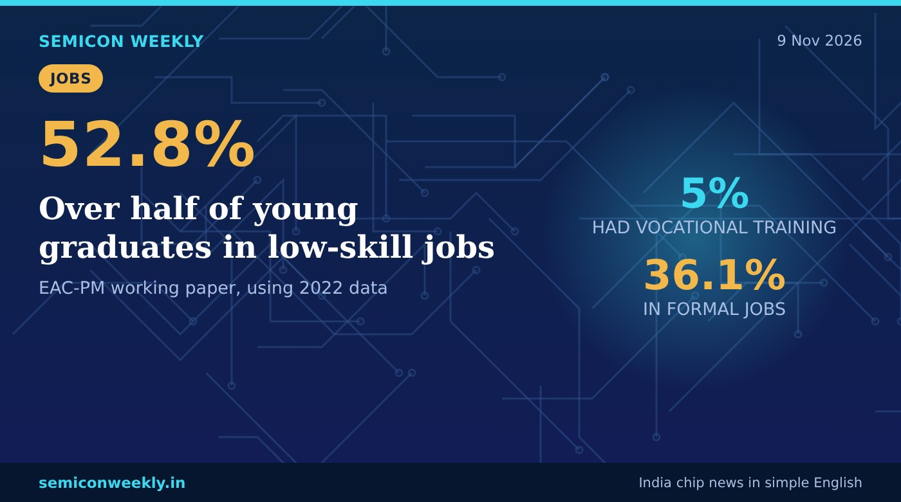

Over half of India's young graduates work in low-skill jobs
The paper calls it 'qualification congestion': so many people now have degrees that employers pick candidates by what else they bring. Only 5% of young people had formal vocational training.

In short
- 52.8% of employed young graduates were in low-skill jobs in 2022, says a new EAC-PM working paper.
- The authors call this 'qualification congestion': employers now sort candidates by college, field, internships, projects and experience.
- Only 5% of people aged 15–29 had formal vocational or technical training.
Key numbers
52.8%employed young graduates in low-skill jobs (2022)
36.1%employed young graduates in formal jobs
5%of 15–29 year-olds with formal vocational training
What happened
- The Economic Advisory Council to the Prime Minister (EAC-PM) published a working paper in November 2026 on education under the New Education Policy 2020.
- It was written by Soumya Kanti Ghosh, an EAC-PM member and SBI's chief economic adviser, and SBI economist Shashidharan Sharma.
- Using the India Employment Report 2024 (ILO and IHD), it says 52.8% of employed young graduates did low-skill work in 2022, while 57.8% had regular salaried jobs and 36.1% had formal jobs.
- The authors say this does not prove graduates lack skills or that degrees are useless; it shows that returns from a degree are uneven.
Why it matters
Why this is useful
- A degree gets you into the race, but it no longer decides who gets the good job.
- Employers increasingly look at internships, projects and hands-on experience to choose between graduates.
Why it is good for freshers
- A degree alone is not enough any more, so chip students should build real projects, internships and tool skills to stand out.
- In VLSI, a GitHub of Verilog/UVM projects, an OpenLane run or an FPGA build can count as real experience.
- Short, hands-on certifications and internships are rare (only 5% have formal training), so they still help you stand out.
Why it is good for India
- India has added many colleges and seats: higher-education enrolment grew 31.5% from 2014-15 to 2023-24.
- Matching skills to jobs is now the bigger task than adding more degrees.
Fresher jobs related to this story
Words in this story
- Qualification congestion: When so many people have the same degree that employers must use other things to choose between them.
- Low-skill job: Work that does not need the skills the person studied for, such as routine or manual tasks.
- Formal employment: A job with a written contract and benefits like provident fund or paid leave.